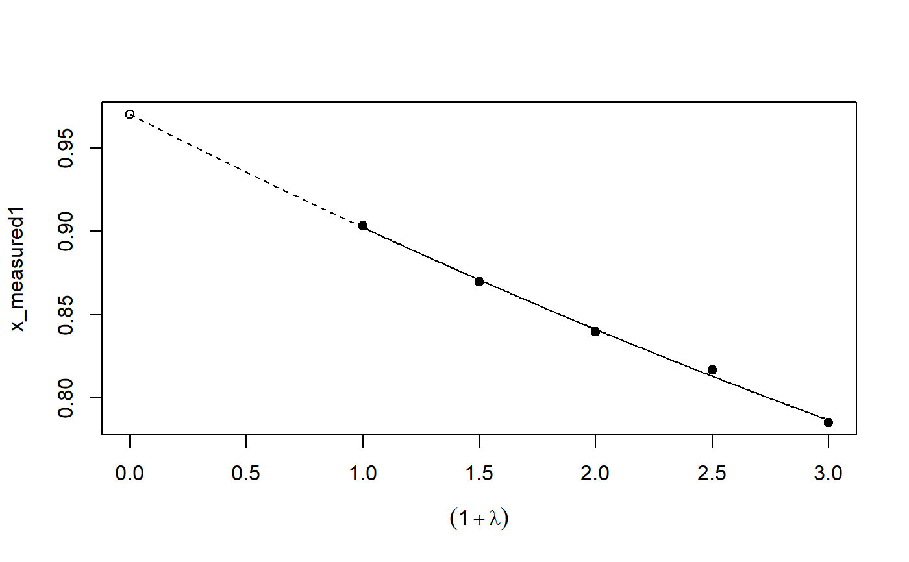
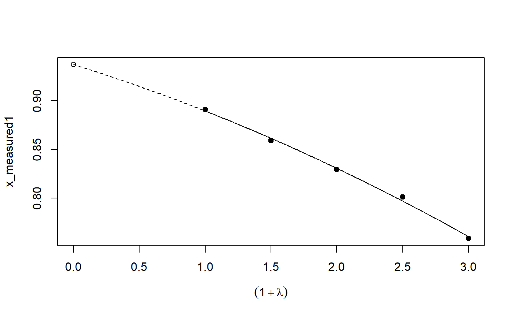
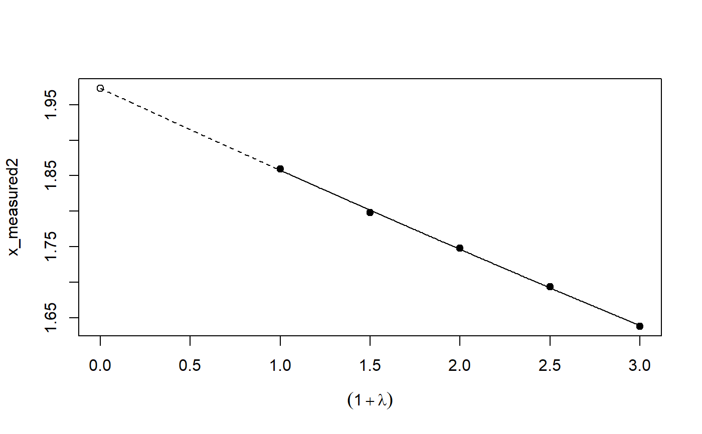
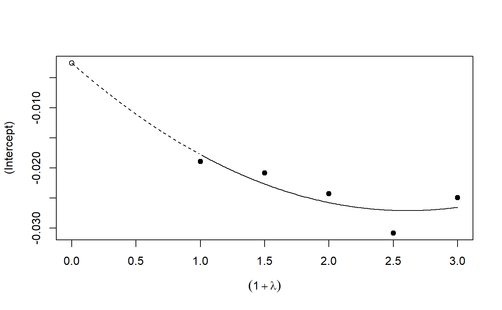
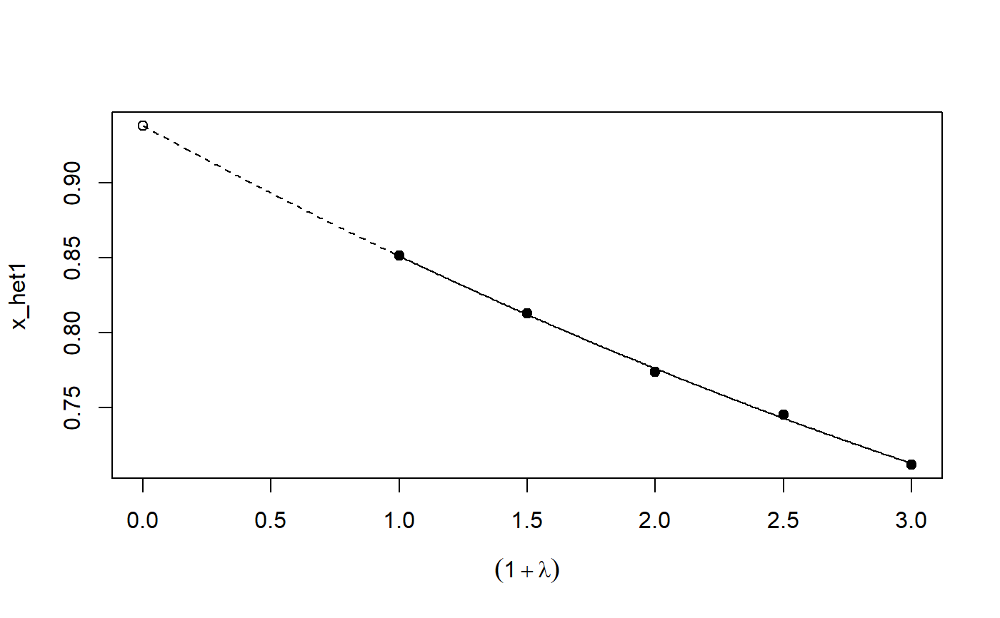

Error or misclassification correction in models using (MC)SIMEX
simex-package.RdPackage simex is an implementation of the SIMEX--algorithm by Cook
and Stephanski and the MCSIMEX--Algorithm by Küchenhoff, Mwalili and Lesaffre.
Details
| Package: | |
| simex | |
| Type: | Package |
| Version: | |
| 1.8 | |
| Date: | 2019-07-28 |
| License: | |
| GPL 2 or above | |
| LazyLoad: | yes |
The package includes first of all the implementation for the SIMEX-- and MCSIMEX--Algorithms. Jackknife and asymptotic variance estimation are implemented. Various methods and analytic tools are provided for a simple and fast access to the SIMEX-- and MCSIMEX--Algorithm.
Functions simex() and mcsimex() can be used on models issued
from lm(), glm() with asymtotic estimation.
Models from nls(), gam() (package mgcv),
polr() (package MASS),
lme(), nlme() (package nlme) and coxph() (package survival) can also be corrected with
these algorithms, but without asymptotic estimations.
References
Lederer, W. and Küchenhoff, H. (2006) A short introduction to the SIMEX and MCSIMEX. R News, 6/4, 26 -- 31
See also
Examples
# See example(simex) and example(mcsimex) ## Seed set.seed(49494) ## simulating the measurement error standard deviations sd_me1 <- 0.3 sd_me2 <- 0.4 temp <- runif(100, min = 0, max = 0.6) sd_me_het1 <- sort(temp) temp2 <- rnorm(100, sd = 0.1) sd_me_het2 <- abs(sd_me_het1 + temp2) ## simulating the independent variables x (real and with measurement error): x_real1 <- rnorm(100) x_real2 <- rpois(100, lambda = 2) x_real3 <- -4*x_real1 + runif(100, min = -2, max = 2) # correlated to x_real x_measured1 <- x_real1 + sd_me1 * rnorm(100) x_measured2 <- x_real2 + sd_me2 * rnorm(100) x_het1 <- x_real1 + sd_me_het1 * rnorm(100) x_het2 <- x_real3 + sd_me_het2 * rnorm(100) ## calculating dependent variable y: y1 <- x_real1 + rnorm(100, sd = 0.05) y2 <- x_real1 + 2*x_real2 + rnorm(100, sd = 0.08) y3 <- x_real1 + 2*x_real3 + rnorm(100, sd = 0.08) ### one variable with homoscedastic measurement error (model_real <- lm(y1 ~ x_real1))#> #> Call: #> lm(formula = y1 ~ x_real1) #> #> Coefficients: #> (Intercept) x_real1 #> -0.004752 0.994554 #>#> #> Call: #> lm(formula = y1 ~ x_measured1, x = TRUE) #> #> Coefficients: #> (Intercept) x_measured1 #> -0.01217 0.90327 #>#> #> Naive model: #> lm(formula = y1 ~ x_measured1, x = TRUE) #> #> SIMEX-Variables: x_measured1 #> Number of Simulations: 100 #> #> Coefficients: #> (Intercept) x_measured1 #> -0.01528 0.97007 #>plot(model_simex)#> #> Call: #> lm(formula = y2 ~ x_real1 + x_real2) #> #> Coefficients: #> (Intercept) x_real1 x_real2 #> -0.01411 0.99094 2.00011 #>#> #> Call: #> lm(formula = y2 ~ x_measured1 + x_measured2, x = TRUE) #> #> Coefficients: #> (Intercept) x_measured1 x_measured2 #> 0.2050 0.8909 1.8593 #>(model_simex2 <- simex(model_naiv2, SIMEXvariable = c("x_measured1", "x_measured2"), measurement.error = cbind(sd_me1, sd_me2)))#> #> Naive model: #> lm(formula = y2 ~ x_measured1 + x_measured2, x = TRUE) #> #> SIMEX-Variables: x_measured1, x_measured2 #> Number of Simulations: 100 #> #> Coefficients: #> (Intercept) x_measured1 x_measured2 #> -0.04414 0.93716 1.97311 #>plot(model_simex2)### one variable with increasing heteroscedastic measurement error model_real#> #> Call: #> lm(formula = y1 ~ x_real1) #> #> Coefficients: #> (Intercept) x_real1 #> -0.004752 0.994554 #>#> #> Call: #> lm(formula = y1 ~ x_het1, x = TRUE) #> #> Coefficients: #> (Intercept) x_het1 #> -0.0189 0.8513 #>(mod_simex1 <- simex(mod_naiv1, SIMEXvariable = "x_het1", measurement.error = sd_me_het1, asymptotic = FALSE))#> #> Naive model: #> lm(formula = y1 ~ x_het1, x = TRUE) #> #> SIMEX-Variables: x_het1 #> Number of Simulations: 100 #> #> Coefficients: #> (Intercept) x_het1 #> -0.002565 0.938262 #>plot(mod_simex1)# NOT RUN { ### two correlated variables with heteroscedastic measurement errors (model_real3 <- lm(y3 ~ x_real1 + x_real3)) (mod_naiv2 <- lm(y3 ~ x_het1 + x_het2, x = TRUE)) (mod_simex2 <- simex(mod_naiv2, SIMEXvariable = c("x_het1", "x_het2"), measurement.error = cbind(sd_me_het1, sd_me_het2), asymptotic = FALSE)) plot(mod_simex2) ### two variables, one with homoscedastic, one with heteroscedastic measurement error model_real2 (mod_naiv3 <- lm(y2 ~ x_measured1 + x_het2, x = TRUE)) (mod_simex3 <- simex(mod_naiv3, SIMEXvariable = c("x_measured1", "x_het2"), measurement.error = cbind(sd_me1, sd_me_het2), asymptotic = FALSE)) ### glm: two variables, one with homoscedastic, one with heteroscedastic measurement error t <- x_real1 + 2*x_real2 g <- 1 / (1 + exp(-t)) u <- runif(100) ybin <- as.numeric(u < g) (logit_real <- glm(ybin ~ x_real1 + x_real2, family = binomial)) (logit_naiv <- glm(ybin ~ x_measured1 + x_het2, x = TRUE, family = binomial)) (logit_simex <- simex(logit_naiv, SIMEXvariable = c("x_measured1", "x_het2"), measurement.error = cbind(sd_me1, sd_me_het2), asymptotic = FALSE)) summary(logit_simex) print(logit_simex) plot(logit_simex) # }